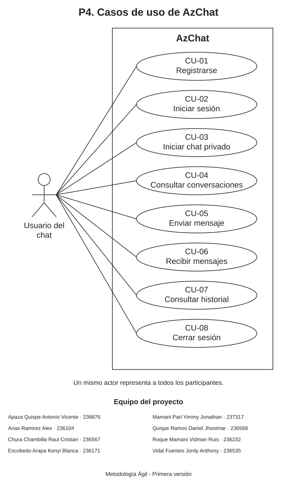

Actor y alcance
El actor Usuario del chat representa a cualquier persona que utiliza AzChat. Una misma persona puede enviar o recibir mensajes. Cada conversación tiene dos participantes, con las mismas funciones.
El modelo contiene ocho casos de uso y corresponde a los requisitos de P3. Los servicios en la nube son componentes internos de apoyo; no se representan como actores humanos ni como funciones del usuario.
Diagrama general

La imagen puede abrirse a tamaño completo. El modelo editable se encuentra en Casos_de_uso_AzChat.drawio. Para editarlo en Draw.io, se utiliza Archivo → Abrir desde → Dispositivo y se selecciona ese archivo.
Relación con los requisitos
| Caso de uso | Requisitos de P3 |
|---|---|
| CU-01. Registrarse | RF-01 |
| CU-02. Iniciar sesión | RF-02 |
| CU-03. Iniciar chat privado | RF-04 |
| CU-04. Consultar conversaciones | RF-07 |
| CU-05. Enviar mensaje | RF-05, RF-03, RF-09 |
| CU-06. Recibir mensajes | RF-06, RF-03, RF-09 |
| CU-07. Consultar historial | RF-08 |
| CU-08. Cerrar sesión | RF-02 |
Descripción de los casos de uso
El inicio de sesión es una condición previa para utilizar las conversaciones. Los permisos se comprueban al consultar o enviar mensajes. La búsqueda exacta del destinatario forma parte de «Iniciar chat privado».
CU-01. Registrarse
Condición previa: La persona dispone de acceso a la web y todavía no tiene una cuenta.
Flujo principal: Ingresa su nombre completo, código de estudiante, nombre de usuario y contraseña. El sistema valida los datos y crea la cuenta.
Resultado: La cuenta queda registrada. La contraseña se almacena mediante un hash seguro.
Regla o situación alternativa: Si faltan datos o los identificadores están ocupados o son ambiguos, se informa el problema y la cuenta no se crea.
CU-02. Iniciar sesión
Condición previa: La persona tiene una cuenta registrada.
Flujo principal: Ingresa su nombre de usuario o su código de estudiante, junto con la contraseña. El sistema comprueba las credenciales y permite el acceso.
Resultado: La persona accede a sus conversaciones.
Regla o situación alternativa: Si las credenciales son incorrectas o no hay conexión con el servicio, se informa el problema y no se inicia sesión.
CU-03. Iniciar chat privado
Condición previa: La persona ha iniciado sesión y conoce el nombre de usuario exacto del destinatario.
Flujo principal: Busca el nombre de usuario exacto de otra persona registrada, selecciona el resultado y abre una conversación privada entre ambas.
Resultado: Los dos participantes pueden utilizar el chat; las demás cuentas no tienen acceso.
Regla o situación alternativa: Si no existe una coincidencia, se informa que el usuario no fue encontrado. La búsqueda no permite acceder a conversaciones ajenas.
CU-04. Consultar conversaciones
Condición previa: La persona ha iniciado sesión.
Flujo principal: Consulta la lista de sus conversaciones y selecciona una para abrirla.
Resultado: Se muestra la conversación seleccionada, identificada por el nombre de usuario del otro participante.
Regla o situación alternativa: Si todavía no tiene conversaciones, se muestra la lista vacía. Un intento de abrir un chat ajeno se rechaza.
CU-05. Enviar mensaje
Condición previa: La persona ha iniciado sesión, participa en el chat abierto y tiene conexión con el servicio.
Flujo principal: Escribe un texto de hasta 1000 caracteres y lo envía. El sistema comprueba los permisos y el contenido, guarda el mensaje y lo distribuye a los participantes conectados.
Resultado: El mensaje queda conservado en el historial e identificado con el nombre de usuario del emisor.
Regla o situación alternativa: Un texto vacío, formado solo por espacios o superior al límite se rechaza. Si falla el envío, se informa el fallo y no se presenta como confirmado.
CU-06. Recibir mensajes
Condición previa: La persona ha iniciado sesión, participa en el chat y está conectada para recibir sus actualizaciones.
Flujo principal: Cuando llega un mensaje nuevo, la aplicación lo muestra en la conversación sin recargar la página e indica el nombre de usuario del emisor.
Resultado: Los participantes conectados visualizan los mensajes nuevos de su conversación.
Regla o situación alternativa: Si se pierde la conexión, se informa el estado. Los mensajes conservados podrán consultarse al recuperar el acceso.
CU-07. Consultar historial
Condición previa: La persona ha iniciado sesión y participa en la conversación.
Flujo principal: Abre una conversación y consulta sus mensajes anteriores, incluidos los recibidos mientras estuvo ausente.
Resultado: Se muestra el historial conservado de ese chat, sin duplicar los mensajes guardados.
Regla o situación alternativa: Si aún no hay mensajes, se muestra la conversación vacía. Si falla la consulta, se informa el problema; no se elimina el historial.
CU-08. Cerrar sesión
Condición previa: La persona tiene una sesión iniciada.
Flujo principal: Selecciona la opción de cerrar sesión y la aplicación termina el acceso de esa sesión.
Resultado: Para volver a consultar las conversaciones deberá iniciar sesión de nuevo. Los mensajes se conservan.
Regla o situación alternativa: Salir de la cuenta no permite editar ni borrar mensajes.
Reglas comunes
- Los mensajes y las conversaciones identifican a las personas mediante su nombre de usuario.
- Cada participante accede únicamente a sus propias conversaciones.
- El historial se conserva sin borrado automático y no se permiten la edición ni el borrado de mensajes.
- La recepción en directo requiere conexión. Los mensajes conservados durante una ausencia se recuperan al consultar el historial.
Referencia del formato
El archivo Draw.io contiene figuras y conectores editables en XML. La imagen SVG permite consultar el diagrama desde el navegador. Véase la documentación del formato XML de Draw.io.
Equipo del proyecto
| Apellidos y nombres | Código |
|---|---|
| Apaza Quispe Antonio Vicente | 236876 |
| Arias Ramirez Alex | 236104 |
| Chura Chambilla Raul Cristian | 236567 |
| Escobedo Arapa Kenyi Blanca | 236171 |
| Mamani Pari Yimmy Jonathan | 237317 |
| Quispe Ramos Daniel Jhosimar | 236568 |
| Roque Mamani Vidman Ruis | 236232 |
| Vidal Fuentes Jordy Anthony | 236535 |